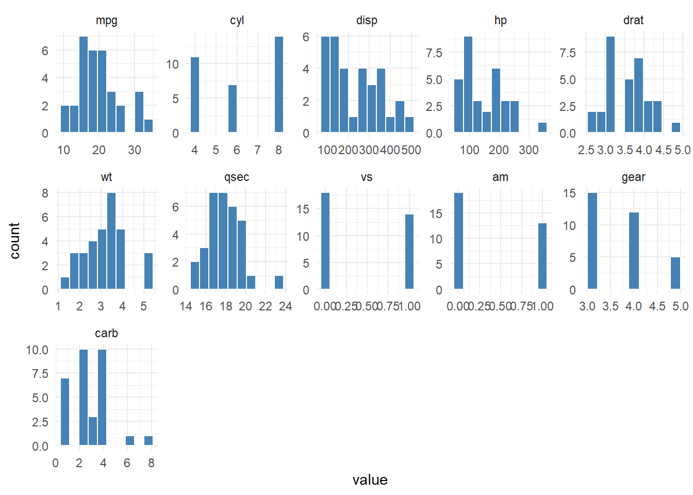
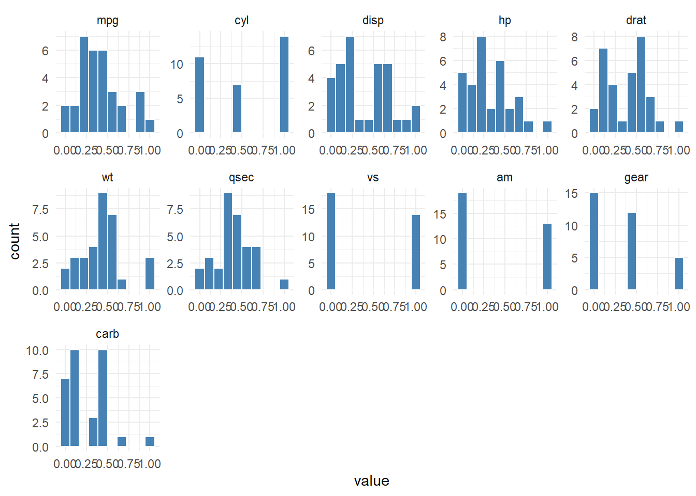

hai_histogram_facet_plot(
.data,
.bins = 10,
.scale_data = FALSE,
.ncol = 5,
.fct_reorder = FALSE,
.fct_rev = FALSE,
.fill = "steelblue",
.color = "white",
.scale = "free",
.interactive = FALSE
)Introduction
One of the most important steps in data analysis is visualizing the distribution of your data. This can help you identify patterns, outliers, and trends in your data, and can also provide valuable insights into the relationships between different variables.
One way to visualize data distributions is by using histograms. A histogram is a graphical representation of the distribution of a numeric variable. It shows the number of observations (or the frequency) within each bin or range of values.
In this blog post, we will showcase the hai_histogram_facet_plot() function from the {healthyR.ai} package, which makes it easy to create faceted histograms of numeric and factor data in R.
Function
Let’s take a look at the full function call.
Here are the parameters and the arguments that get passed to them.
.data- The data you want to pass to the function..bins- The number of bins for the histograms..scale_data- This is a boolean set to FALSE. TRUE will usehai_scale_zero_one_vec()to [0, 1] scale the data..ncol- The number of columns for the facet_warp argument..fct_reorder- Should the factor column be reordered? TRUE/FALSE, default of FALSE.fct_rev- Should the factor column be reversed? TRUE/FALSE, default of FALSE.fill- Default is steelblue.color- Default is ‘white’.scale- Default is ‘free’.interactive- Default is FALSE, TRUE will produce a{plotly}plot.
Examples
Let’s take a look at some example.
library(healthyR.ai, quietly = TRUE)
hai_histogram_facet_plot(mtcars)
Now lets scale the data and review.
hai_histogram_facet_plot(mtcars, .scale_data = TRUE)
Let’s take a look the iris data set now.
output <- hai_histogram_facet_plot(iris, .interactive = TRUE)
output$plotIn this blog post, we showcased the hai_histogram_facet_plot() function from the {healthyR.ai} package, which makes it easy to create histogram plots and faceted histograms in R. The hai_histogram_facet_plot() function allows you to quickly and easily visualize the distribution of your data, and can provide valuable insights into the relationships between different variables
Voila!